Visualize distributions and relationships using the Matplotlib and Seaborn plotting libraries
Apply kernel density estimation to smooth data
Transform data in preparation for visualization and modeling
In our journey of the data science lifecycle, we have begun to explore the vast world of exploratory data analysis. More recently, we learned how to pre-process data using various manipulation and cleaning techniques. As we work towards understanding our data, there is one key component missing in our arsenal - the ability to visualize and discern relationships in existing data.
This lecture will introduce you to various examples of data visualizations and their underlying theory. In doing so, we’ll motivate their importance in real-world examples with the use of plotting libraries.
7.1 Visualizations in Data 8 (and Data 100, so far)
You’ve likely encountered several forms of data visualizations in your studies. You may remember two such examples from Data 8: line charts and histograms. Each of these served a unique purpose. For example, line charts displayed how numerical quantities changed over time, while histograms were useful in understanding a variable’s distribution.
Line Chart
Histogram
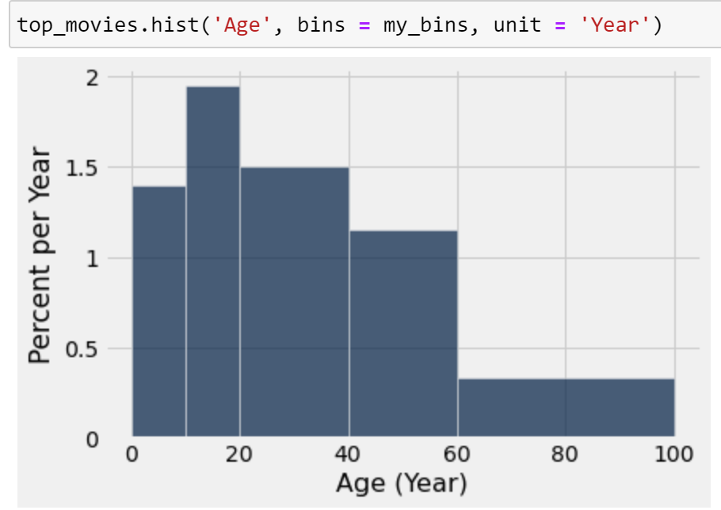
7.2 Goals of Visualization
Visualizations are useful for a number of reasons. In Data 100, we consider two areas in particular:
To help your own understanding of the data
Key part of exploratory data analysis.
Summarize trends visually before in-depth analysis.
Put together, these goals add more nuance to our visualization task. Visualization is not simply a matter of making “pretty” pictures; rather, we will need to do a lot of thinking about what stylistic choices communicate ideas in the most effective way.
One of the most common applications of visualizations is in understanding a distribution of data.
7.3 Visualizing Distributions
7.3.1 Distributions
A distribution describes the frequency of unique values in a variable. Distributions must satisfy two properties:
Each data point must belong to only one category.
The total frequency of all categories must sum to 100%. In other words, their total count should equal the number of values in consideration.
Not a Valid Distribution
Valid Distribution
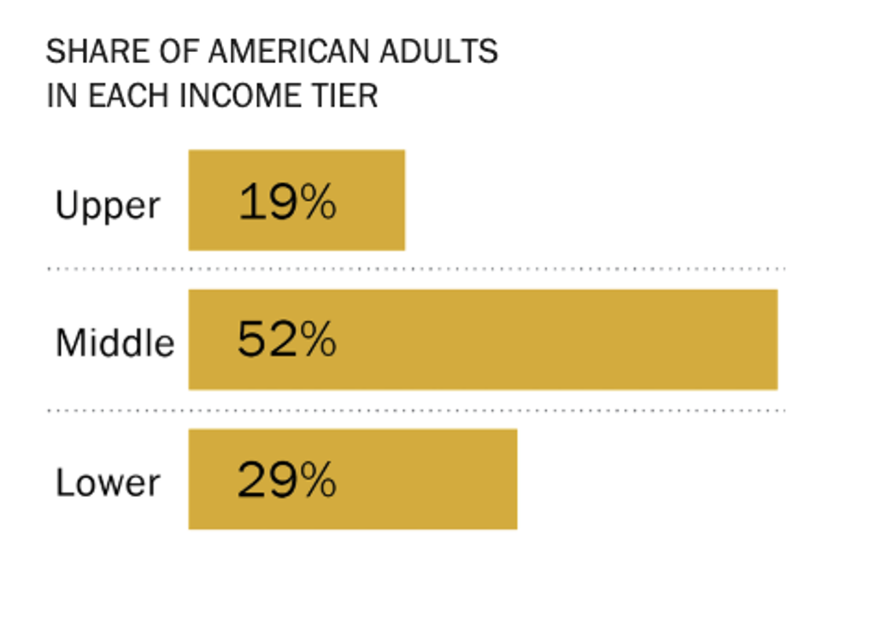
Left Diagram: This is not a valid distribution since individuals can be associated to more than one category. The bar values indicate a change in time, rather than the count or proportion of individuals belonging to each categoy.
Right Diagram: This example satisfies the two properties of distributions, so it is a valid distribution. Each bar represents the percentage of individuals who belonging to the corresponding category. All percentages sum to 100%, as required.
7.3.2 Variable Types
In our previous work on EDA, we learned how to categorize variables by their type. We saw that some variables are quantitative while others are qualitative; we also discussed the sub-divisions of variables into continuous, discrete, ordinal, and nominal.
Different plot types are more or less suited for displaying particular types of variables. Before creating a visualization, you should always ask yourself: what types of variables am I presenting? What plots are suitable to present this variable type?
A summary of the plots generally used to display different variable types is given below. In the following sections, we will introduce each type of plot and learn how to generate them in code.
Distribution of a qualitative variable:
Bar plot
Distribution of a continuous variable across qualitative categories:
Overlaid histograms
Side-by-side box plots
Side-by-side violin plots
Overlaid KDE plots
Distribution of a quantitative continuous variable:
Histogram
Box plot
Violin plot
KDE plot
Relationship between quantitative continuous variables:
Scatter plot
Hex plot
Contour map
7.3.3 Bar Plots
As we saw above, a bar plot is one of the most common ways of displaying the distribution of a qualitative (categorical) variable. The length of a bar plot encodes the frequency of a category; the width encodes no useful information.
Let’s contextualize this in an example. We will use the World Bank dataset wb, which contains information about countries and social statistics.
Code
import pandas as pdwb = pd.read_csv("data/world_bank.csv", index_col=0)wb.head()
Continent
Country
Primary completion rate: Male: % of relevant age group: 2015
Primary completion rate: Female: % of relevant age group: 2015
Lower secondary completion rate: Male: % of relevant age group: 2015
Lower secondary completion rate: Female: % of relevant age group: 2015
Youth literacy rate: Male: % of ages 15-24: 2005-14
Youth literacy rate: Female: % of ages 15-24: 2005-14
Adult literacy rate: Male: % ages 15 and older: 2005-14
Adult literacy rate: Female: % ages 15 and older: 2005-14
...
Access to improved sanitation facilities: % of population: 1990
Access to improved sanitation facilities: % of population: 2015
Child immunization rate: Measles: % of children ages 12-23 months: 2015
Child immunization rate: DTP3: % of children ages 12-23 months: 2015
Children with acute respiratory infection taken to health provider: % of children under age 5 with ARI: 2009-2016
Children with diarrhea who received oral rehydration and continuous feeding: % of children under age 5 with diarrhea: 2009-2016
Children sleeping under treated bed nets: % of children under age 5: 2009-2016
Children with fever receiving antimalarial drugs: % of children under age 5 with fever: 2009-2016
Tuberculosis: Treatment success rate: % of new cases: 2014
Tuberculosis: Cases detection rate: % of new estimated cases: 2015
0
Africa
Algeria
106.0
105.0
68.0
85.0
96.0
92.0
83.0
68.0
...
80.0
88.0
95.0
95.0
66.0
42.0
NaN
NaN
88.0
80.0
1
Africa
Angola
NaN
NaN
NaN
NaN
79.0
67.0
82.0
60.0
...
22.0
52.0
55.0
64.0
NaN
NaN
25.9
28.3
34.0
64.0
2
Africa
Benin
83.0
73.0
50.0
37.0
55.0
31.0
41.0
18.0
...
7.0
20.0
75.0
79.0
23.0
33.0
72.7
25.9
89.0
61.0
3
Africa
Botswana
98.0
101.0
86.0
87.0
96.0
99.0
87.0
89.0
...
39.0
63.0
97.0
95.0
NaN
NaN
NaN
NaN
77.0
62.0
5
Africa
Burundi
58.0
66.0
35.0
30.0
90.0
88.0
89.0
85.0
...
42.0
48.0
93.0
94.0
55.0
43.0
53.8
25.4
91.0
51.0
5 rows × 47 columns
We can visualize the distribution of the "Continent" column using a bar plot. There are a few ways to do this.
7.3.3.1 Plotting in Matplotlib
Matplotlib is a common library used for generating visualizations in Python. Most Matplotlib plotting functions follow the same structure: we pass in a sequence (list, array, or Series) of values to be plotted on the x-axis, and a second sequence of values to be plotted on the y-axis. In pseudocode, Matplotlib plotting calls typically have the form:
# plt is the typical alias for Matplotlib
import matplotlib.pyplot as plt
plt.plotting_function(x_values, y_values)
To add labels and a title to a plot, we call the functions plt.xlabel, plt.ylabel, and plt.title.
plt.xlabel(“x axis label”)
plt.ylabel(“y axis label”)
plt.title(“Title of the plot”);
The plotting function to create a bar plot in Matplotlib is plt.bar. To generate a bar plot, we will need to create a set of x values and y values to pass in as arguments to plt.bar. In the cell below, we call .value_counts() to obtain the distribution of the "Continent" column. The index of the resulting Series contains our desired x values (the names of each unique continent), while the values contain our y data (the counts of countries in each continent).
import matplotlib.pyplot as pltcontinents = wb["Continent"].value_counts()plt.bar(continents.index, continents)plt.xlabel("Continent")plt.ylabel("Count of countries")plt.title("Distribution of countries across continents");
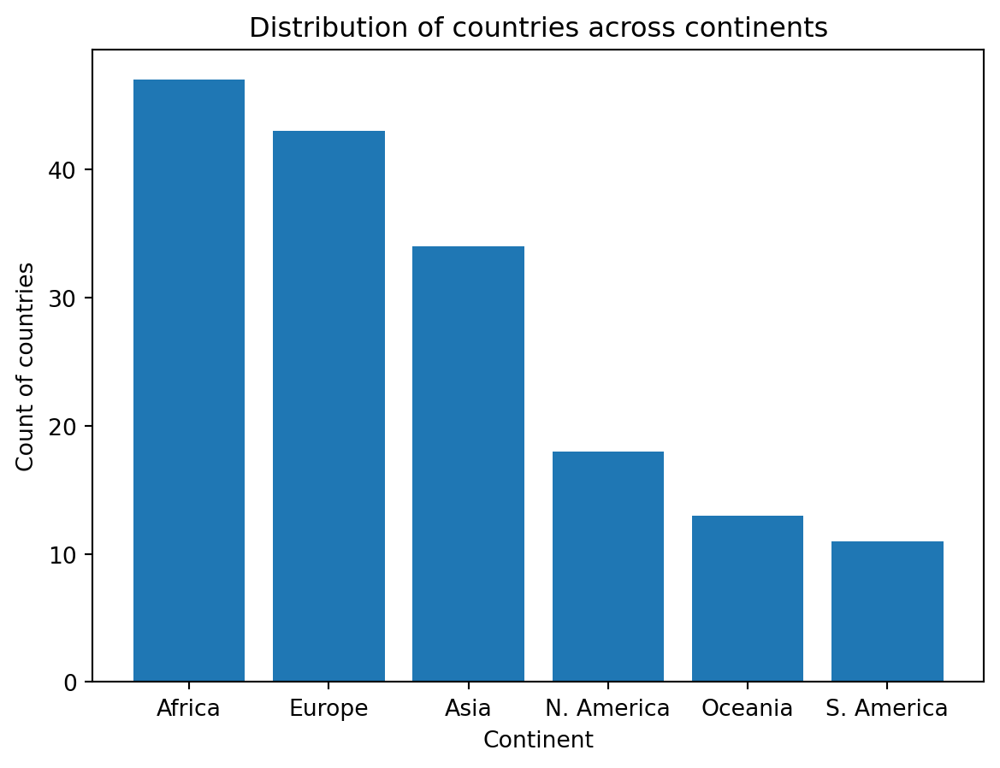
You may have noticed the semicolon ; at the end of cell above. This suppresses any unnecessary output other than the plot. If we do not include a semicolon, the plot will still generate, however, we will see extraneous text as well:
plt.bar(continents.index, continents)
<BarContainer object of 6 artists>
7.3.3.2 Plotting in Seaborn
Seaborn is another popular Python library for creating plots. In Data 100, we will explore the use of both Matplotlib and Seaborn. You may find that you prefer one over the other – if so, you are welcome to use your favorite method! We present plotting code for both libraries to help familiarize you with their use.
Seaborn plotting functions use a different structure to what we saw in Matplotlib. In Seaborn, we pass in an entire DataFrame as an argument, then specify what column(s) from the DataFrame to plot. In pseudocode:
# sns is the typical alias for Seaborn
import seaborn as sns
sns.plotting_function(data = df, x = "x_col", y = "y_col")
As before, we can add axis labels and a title:
plt.xlabel(“x axis label”)
plt.ylabel(“y axis label”)
plt.title(“Title of the plot”)
The Seaborn plotting function for creating a bar plot is sns.countplot.
import seaborn as snssns.countplot(data = wb, x ='Continent');
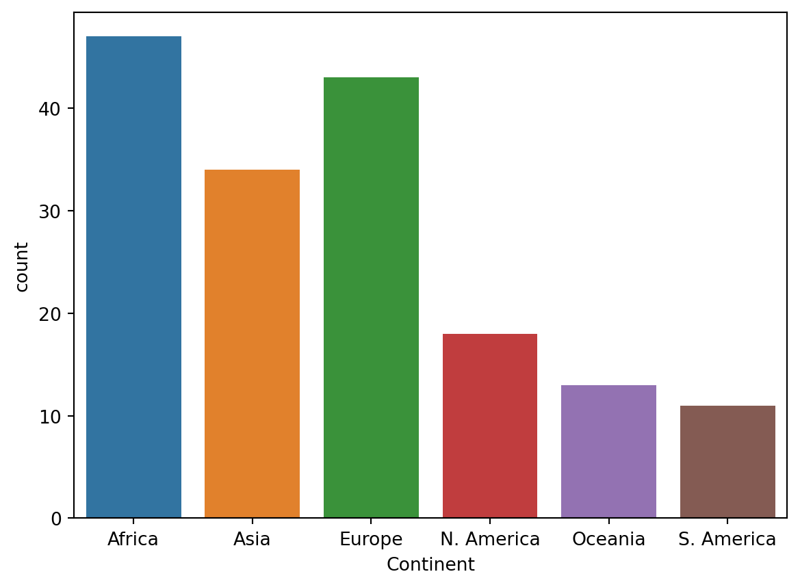
sns.countplot both counts and visualizes the number of unique values in a given column, without the need for us to pre-process data using .value_counts(). The DataFrame containing our desired information is specified by the data argument, while the column to be plotted is specified by the x argument.
To visualize the distribution of a quantiative variable, bar plots are no longer an appropriate choice of visualization. To see why, consider what happens when we use sns.countplot to visualize the distribution of gross national income, a quantitative continuous variable.
sns.countplot(data = wb, x ='Gross national income per capita, Atlas method: $: 2016');
What happened? A bar plot (either plt.bar or sns.countplot) will create a separate bar for each unique value of a variable. With a continuous variable, we may not have a finite number of possible values, which can lead to situations where we would need many, many bars to display each unique value.
To visualize the distribution of a continuous variable, we use a different type of plot:
Box plot
Violin plot
Histogram
7.3.4 Box Plots
Box plots display distributions using information about quartiles.
A quartile represents a 25% portion of the data. We say that: * The first quartile (Q1) repesents the 25th percentile – 25% of the data lies below the first quartile * The second quartile (Q2) represents the 50th percentile, also known as the median – 50% of the data lies below the second quartile * The third quartile (Q3) represents the 75th percentile – 75% of the data lies below the third quartile.
In a box plot, the lower extent of the box lies at Q1, while the upper extent of the box lies at Q3. The horizontal line in the middle of the box corresponds to Q2 (equivalently, the median).
The interquartile range measures the spread of the middle \(50\)% of the distribution, calculated as the (\(3^{rd}\) Quartile \(-\)\(1^{st}\) Quartile).
The whiskers of a box-plot are the two points that lie at the [\(1^{st}\) Quartile \(-\) (\(1.5\times\) IQR)], and the [\(3^{rd}\) Quartile \(+\) (\(1.5\times\) IQR)]. They are the lower and upper ranges of “normal” data (the points excluding outliers). Subsequently, the outliers are the data points that fall beyond the whiskers, or further than (\(1.5 \times\) IQR) from the extreme quartiles.
In Matplotlib, box plots are created using the function plt.boxplot.
# For simplicity, remove NaN valueswb = wb[~wb["Gross domestic product: % growth : 2016"].isna()]plt.boxplot(wb['Gross domestic product: % growth : 2016'])plt.ylabel("% GDP growth")plt.title("Distribution of GDP growth across countries");
And in Seaborn, box plots are generated by sns.boxplot.
sns.boxplot(data = wb, y ="Gross domestic product: % growth : 2016")plt.title("Distribution of GDP growth across countries");
Sometimes, we may wish to also incorporate a qualiatative variable. For example, we may wish to compare the distribution of a quantitative variable across a set of categories.
To do so, we can plot side-by-side box plots. In the example below, the continent of each county, a qualitative nominal variable, is plotted on the x-axis, while GDP growth, a quantiative continuous variable, is plotted on the y-axis.
sns.boxplot(data=wb, x="Continent", y="Gross domestic product: % growth : 2016")plt.title("Distribution of GDP growth by continent");
7.3.5 Violin Plots
Violin plots, much like box plots, encode information about quantiles. A violin plot also incorporates smoothed density curves to add an additional level of information – now, the width of the plot at each point also carries meaning.
The three quartiles and whiskers that we saw in box plots are still present in violin plots (look closely at the center)!
# In Seaborn: sns.violinplotsns.violinplot(data = wb, y ='Gross domestic product: % growth : 2016')plt.title("Distribution of GDP growth across countries");
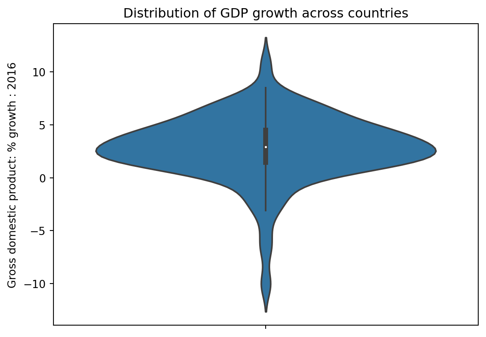
# In Matplotlib: plt.violinplotplt.violinplot(wb['Gross domestic product: % growth : 2016'])plt.ylabel("% GDP growth")plt.title("Distribution of GDP growth across countries");
7.3.6 Histograms
Histograms are an alternative method of visualizing quantitative continuous distributions. You first encountered them in Data 8. In a histogram, datapoints with similar values are collected into a shared “bin”. These bins are scaled such that the area of each bin is equal to the percentage of datapoints it contains.
# In Matplotlib: plt.hist# The `edgecolor` argument controls the color of the bin edgesgni = wb["Gross national income per capita, Atlas method: $: 2016"]plt.hist(gni, density=True, edgecolor="white")# Add labelsplt.xlabel("Gross national income per capita")plt.ylabel("Density")plt.title("Distribution of gross national income per capita");
# In Seaborn: sns.histplotsns.histplot(data = wb, x ="Gross national income per capita, Atlas method: $: 2016", stat="density")plt.title("Distribution of gross national income per capita");
We can overlay histograms (or density curves) to compare distributions across qualitative categories.
The hue parameter of sns.histplot specifies the column that should be used to determine the color of each category. hue can be used in many Seaborn plotting functions.
Notice that the resulting plot includes a legend describing which color corresponds to each hemisphere – a legend should always be included if color is used to encode information in a visualization! This assists with our visualization goal of communicating our results to a broader audience.
Code
# Create a new variable to store the hemisphere in which each country is locatednorth = ["Asia", "Europe", "N. America"]south = ["Africa", "Oceania", "S. America"]wb.loc[wb["Continent"].isin(north), "Hemisphere"] ="Northern"wb.loc[wb["Continent"].isin(south), "Hemisphere"] ="Southern"
sns.histplot(data = wb, x ="Gross national income per capita, Atlas method: $: 2016", \ hue="Hemisphere", stat="density")plt.title("Distribution of gross national income per capita");
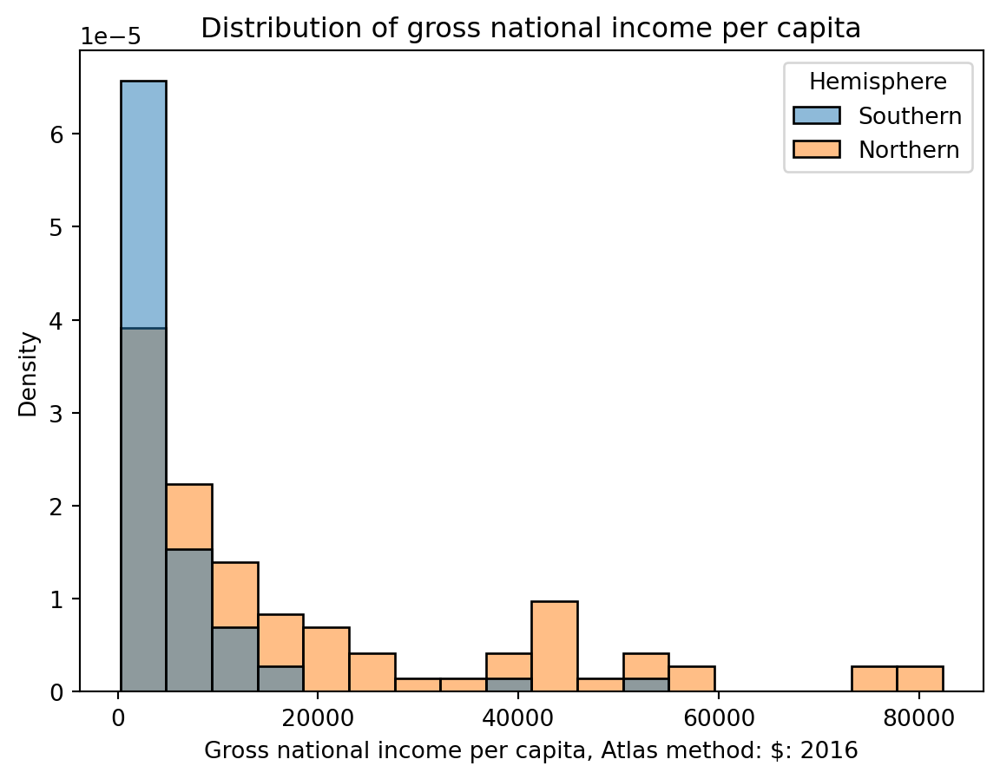
You may have seen histograms drawn differently – perhaps with an overlaid density curve and normalized y-axis. We can display both with a few tweaks to our code.
To visualize a density curve, we can set the the kde = True argument of the sns.histplot. Setting the argument stat = 'density' normalizes our histogram and displays densities, instead of counts, on the y-axis. You’ll notice that the area under the density curve is 1.
sns.histplot(data = wb, x ="Gross national income per capita, Atlas method: $: 2016", \ kde =True, \ stat ='density');
7.3.6.1 Interpreting Histograms
Histograms allow us to assess a distribution by its shape. In doing so, there are a few features that we typically consider.
The skew of a histogram describes the direction in which its “tail” extends. If a distribution has a long right tail (such as gross national income per capita), it is skewed right. In a right-skewed distribution, the few large outliers “pull” the mean to the right of the median.
If a distribution has a long left tail (such as water source access), it is skewed left. In a left-skewed distribution, the few small outliers “pull” the mean to the left of the median.
In the case where a distribution has equal-sized right and left tails, it is symmetric. The mean is approximately equal to the median. Think of mean as the balancing point of the distribution
import numpy as npsns.histplot(data = wb, x ="Gross national income per capita, Atlas method: $: 2016", stat ="density");df_mean = np.mean(wb["Gross national income per capita, Atlas method: $: 2016"])df_median = np.nanmedian(wb["Gross national income per capita, Atlas method: $: 2016"])print(f"The mean, {df_mean}, is right of the median, {df_median}")
The mean, 12963.312101910828, is right of the median, 5280.0
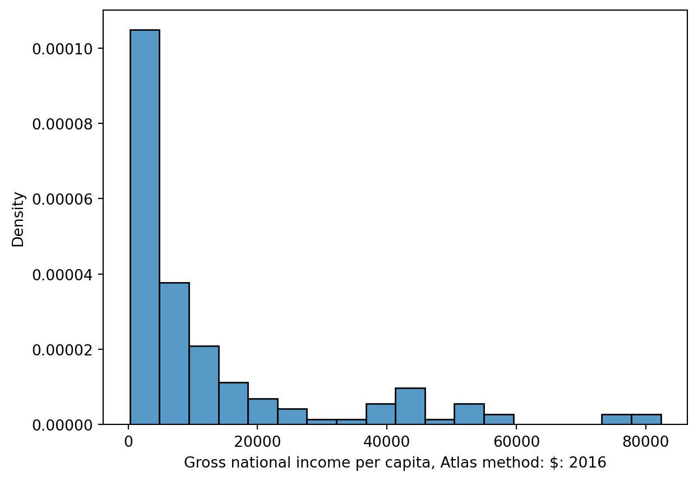
sns.histplot(data = wb, x ='Access to an improved water source: % of population: 2015', stat ="density");df_mean = np.mean(wb['Access to an improved water source: % of population: 2015'])df_median = np.nanmedian(wb['Access to an improved water source: % of population: 2015'])print(f"The mean, {df_mean}, is left of the median, {df_median}")
The mean, 88.8896103896104, is left of the median, 96.0
A mode of a distribution is a local or global maximum. A distribution with a single clear maximum is unimodal, distributions with two modes are bimodal, and those with 3 or more are multimodal.
You may need to distinguish between modes and random noise. Often, it is difficult to discern noise from true modes when working with histograms – a histogram may contain too much detail to be able to identify general trends across the distribution. One solution to this issue, which we will introduce next, is to construct a kernel density estimate.
7.3.7 Kernel Density Estimation
7.3.7.1 KDE Theory
A kernel density estimate (KDE) is a smooth, continuous function that approximates a curve. They allow us to represent general trends in a distribution without focusing on the details, which is useful to analyzing the broad structure of a dataset.
More formally, a KDE attempts to approximate the underlying probability distribution from which our dataset was drawn. You may have encountered the idea of a probability distribution in your other classes; if not, we’ll discuss it at length in Data 100 next lecture. For now, you can think of a probability distribution as a description of how likely it is for us to sample a particular value in our dataset.
A KDE curve estimates the probability density function of a random variable. Consider the example below, where we have used sns.displot to plot both a histogram (containing the datapoints we actually collected) and a KDE curve (representing the approximated probability distribution from which this data was drawn).
sns.displot(data = wb, x ='Antiretroviral therapy coverage: % of people living with HIV: 2015', \ kde =True, stat ="density")plt.title("Distribution of HIV rates");
Notice that the smooth KDE curve is higher when the histogram bins are taller. You can think of the height of the KDE curve as representing how “probable” it is that we randomly sample a datapoint with the corresponding value. This intuitively makes sense – if we have already collected more datapoints with a particular value (resulting in a tall histogram bin), it is more likely that, if we randomly sample another datapoint, we will sample one with a similar value (resulting in a high KDE curve).
The area under a probability density function should always integrate to 1, representing the fact that the total probability of a distribution should always sum to 100%. Because of this, a KDE curve will always have an area of 1 under the curve.
7.3.7.2 Constructing a KDE
We perform kernel density estimation using three steps.
Place a kernel at each data point
Normalize kernels to have total area of 1 (across all kernels)
Sum kernels together
We’ll explain what a “kernel” is momentarily.
To make things simpler, let’s construct a KDE for a small, artificially-generated dataset of 5 datapoints: \([2.2, 2.8, 3.7, 5.3, 5.7]\). In the plot below, each vertical bar represents one datapoint.
Code
data = [2.2, 2.8, 3.7, 5.3, 5.7]sns.rugplot(data, height=0.3)plt.xlabel("Data")plt.ylabel("Density")plt.xlim(-3, 10)plt.ylim(0, 0.5);
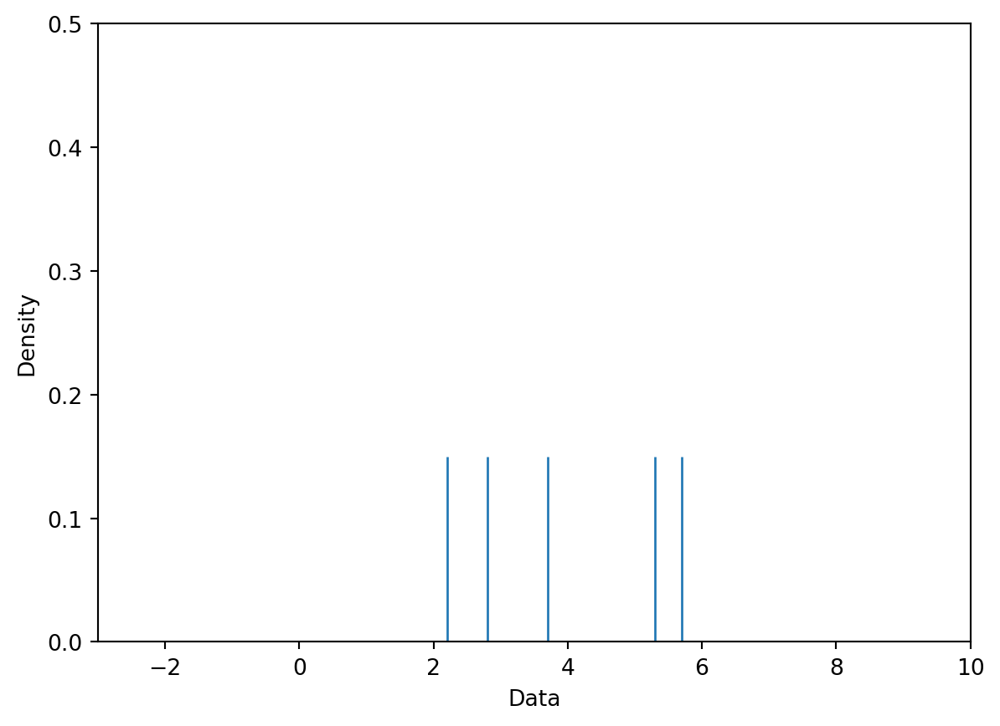
Our goal is to create the following KDE curve, which was generated automatically by sns.kdeplot.
7.3.7.2.1 Step 1: Place a Kernel at Each Datapoint
To begin generating a density curve, we need to choose a kernel and bandwidth value (\(\alpha\)). What are these exactly?
A kernel is a density curve. It is the mathematical function that attempts to capture the randomness of each datapoint in our sampled data. To explain what this means, consider just one of the datapoints in our dataset: \(2.2\). We obtained this datapoint by randomly sampling some information out in the real world (you can imagine \(2.2\) as representing a single measurement taken in an experiment, for example). If we were to sample a new datapoint, we may obtain a slightly different value. It could be higher than \(2.2\); it could also be lower than \(2.2\). We make the assumption that any future sampled datapoints will likely be similar in value to the data we’ve already drawn. This means that our kernel – our description of the probability of randomly sampling any new value – will be greatest at the datapoint we’ve already drawn, but still have non-zero probability above and below it. The area under any kernel should integrate to 1, representing the total probability of drawing a new datapoint.
A bandwidth value, usually denoted by \(\alpha\), represents the width of the kernel. A large value of \(\alpha\) will result in a wide, short kernel function, while a small value with result in a narrow, tall kernel.
Below, we place a Gaussian kernel, plotted in orange, over the datapoint \(2.2\). A Gaussian kernel is simply the normal distribution, which you may have called a bell curve in Data 8.
Code
def gaussian_kernel(x, z, a):# We'll discuss where this mathematical formulation came from laterreturn (1/np.sqrt(2*np.pi*a**2)) * np.exp((-(x - z)**2/ (2* a**2)))# Plot our datapointsns.rugplot([2.2], height=0.3)# Plot the kernelx = np.linspace(-3, 10, 1000)plt.plot(x, gaussian_kernel(x, 2.2, 1))plt.xlabel("Data")plt.ylabel("Density")plt.xlim(-3, 10)plt.ylim(0, 0.5);
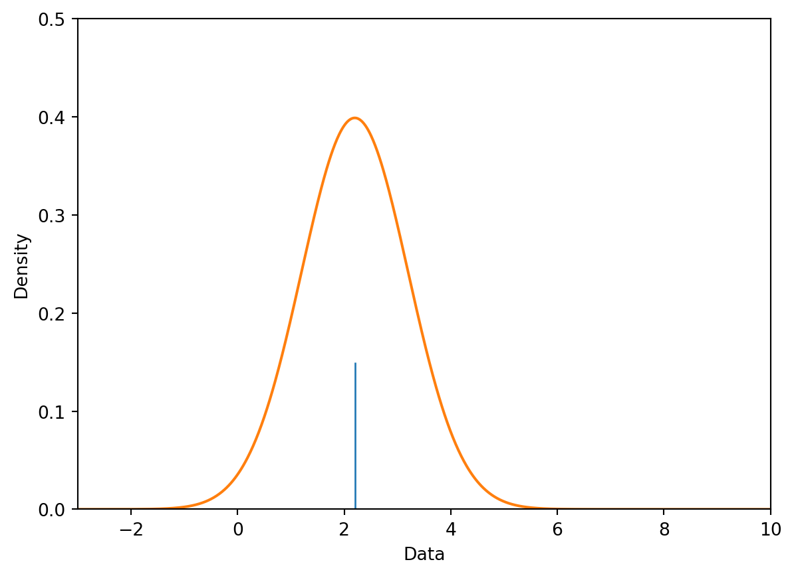
To begin creating our KDE, we place a kernel on each datapoint in our dataset. For our dataset of 5 points, we will have 5 kernels.
Code
# You will work with the functions below in Lab 4def create_kde(kernel, pts, a):# Takes in a kernel, set of points, and alpha# Returns the KDE as a functiondef f(x): output =0for pt in pts: output += kernel(x, pt, a)return output /len(pts) # Normalization factorreturn fdef plot_kde(kernel, pts, a):# Calls create_kde and plots the corresponding KDE f = create_kde(kernel, pts, a) x = np.linspace(min(pts) -5, max(pts) +5, 1000) y = [f(xi) for xi in x] plt.plot(x, y);def plot_separate_kernels(kernel, pts, a, norm=False):# Plots individual kernels, which are then summed to create the KDE x = np.linspace(min(pts) -5, max(pts) +5, 1000)for pt in pts: y = kernel(x, pt, a)if norm: y /=len(pts) plt.plot(x, y) plt.show();plt.xlim(-3, 10)plt.ylim(0, 0.5)plt.xlabel("Data")plt.ylabel("Density")plot_separate_kernels(gaussian_kernel, data, a =1)
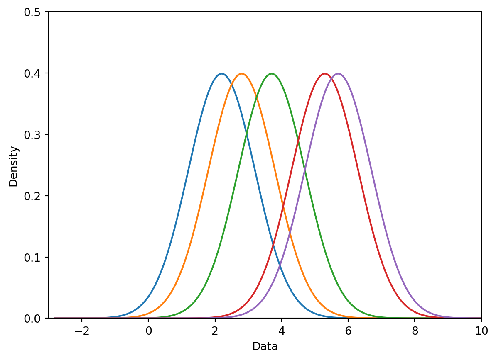
7.3.7.2.2 Step 2: Normalize Kernels to Have Total Area of 1
Above, we said that each kernel has an area of 1. Earlier, we also said that our goal is to construct a KDE curve using these kernels with a total area of 1. If we were to directly sum the kernels as they are, we would produce a KDE curve with an integrated area of (5 kernels) \(\times\) (area of 1 each) = 5. To avoid this, we will normalize each of our kernels. This involves multiplying each kernel by \(1/(\#\:\text{datapoints})\).
In the cell below, we multiply each of our 5 kernels by \(\frac{1}{5}\) to apply normalization.
Code
plt.xlim(-3, 10)plt.ylim(0, 0.5)plt.xlabel("Data")plt.ylabel("Density")# The `norm` argument specifies whether or not to normalize the kernelsplot_separate_kernels(gaussian_kernel, data, a =1, norm =True)
7.3.7.2.3 Step 3: Sum Kernels Together
Our KDE curve is the sum of the normalized kernels. Notice that the final curve is identical to the plot generated by sns.kdeplot we saw earlier!
Code
plt.xlim(-3, 10)plt.ylim(0, 0.5)plt.xlabel("Data")plt.ylabel("Density")plot_kde(gaussian_kernel, data, a =1)
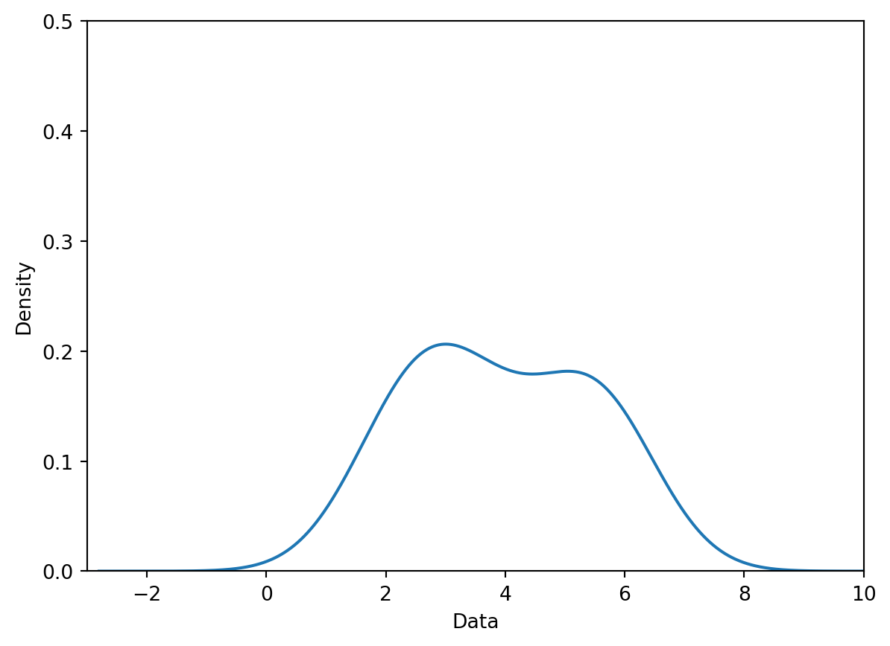
7.3.7.3 Kernel Functions and Bandwidths
A kernel, for our purposes, is any valid probability density function. This means that a kernel function must:
Be non-negative for all values (we can’t have negative probability)
Integrate to 1
7.3.7.3.1 Gaussian Kernel
As we saw above, a Gaussian kernel (also called the normal distribution or bell curve) is one of the most common choices of kernel functions. It is defined mathematically as:
\(x\) (no subscript) represents values along the x-axis of our plot
\(x_i\) represents the \(i\)th datapoint in our dataset. It is one of the values that we have actually collected in our data sampling process. In our example earlier, \(x_i=2.2\). Those of you who have taken a probability class may recognize \(x_i\) as the mean of the normal distribution.
\(\alpha\) is the bandwidth parameter, representing the width of our kernel. More formally, \(\alpha\) is the standard deviation of the Gaussian curve.
The details of this (admittedly intimidating) formula are less important than understanding its role in kernel density estimation – this equation gives us the shape of each kernel.
A large value of \(\alpha\) will produce a kernel that is wider and shorter – this leads to a smoother KDE when the kernels are summed together. Conversely, a small value of \(\alpha\) will produce a narrower, taller kernel, and, with it, a noisier KDE.
Gaussian Kernel, \(\alpha\) = 0.1
Gaussian Kernel, \(\alpha\) = 1
Gaussian Kernel, \(\alpha\) = 2
Gaussian Kernel, \(\alpha\) = 10
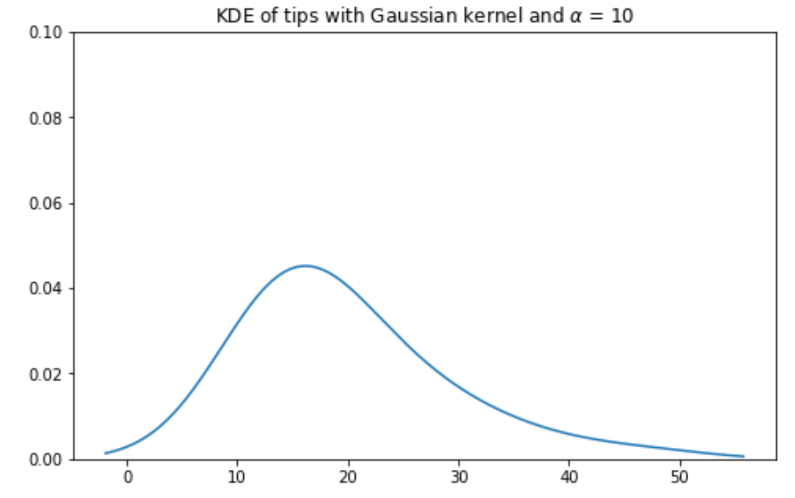
7.3.7.4 Boxcar Kernel
Another example of a kernel is the Boxcar kernel. The boxcar kernel assigns a uniform density to points within a “window” of the observation, and a density of 0 elsewhere. The equation below is a Boxcar kernel with the center at \(x_i\) and the bandwidth of \(\alpha\).
The boxcar kernel is seldom used in practice – we include it here to demonstrate that a kernel function can take whatever form you would like, provided it integrates to 1 and does not output negative values. In the cell below, we plot the boxcar kernel at our datapoint from before, \(2.2\).
Using the boxcar kernel with \(\alpha=2.5\) to generate a KDE for our full dataset yields the following result:
Code
plt.xlabel("Data")plt.ylabel("Density")plt.xlim(-3, 10)plt.ylim(0, 0.5)# Plot the kernelx = np.linspace(-3, 10, 1000)plot_kde(boxcar_kernel, data, a =2.5)
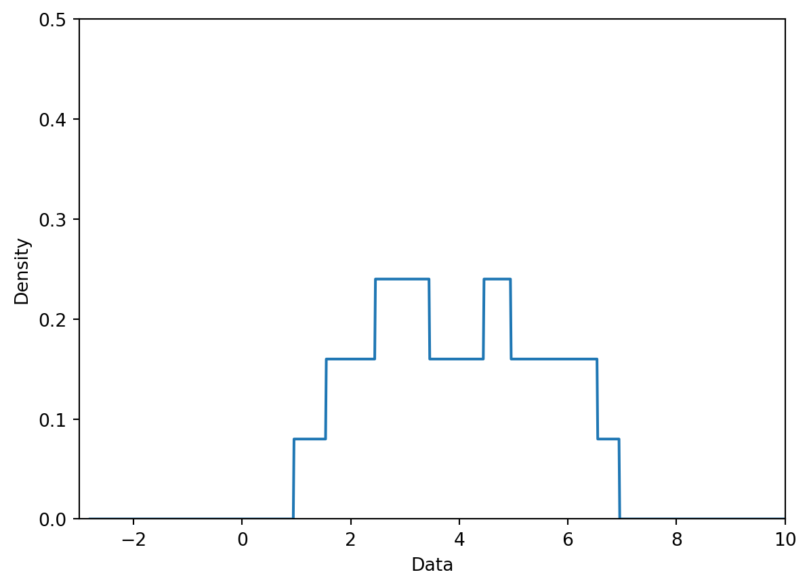
7.4 Visualizing Relationships
Up until now, we’ve discussed how to visualize single-variable distributions. Now, let’s understand how to visualize the relationship between pairs of numerical variables.
7.4.0.1 Scatter Plots
Scatter plots are one of the most useful tools in representing the relationship between two quantitative variables. They are particularly important in gauging the strength, or correlation, of the relationship between variables. Knowledge of these relationships can then motivate decisions in our modeling process.
In Matplotlib, we use the function plt.scatter to generate a scatter plot. Notice that unlike our examples of plotting single-variable distributions, now we specify sequences of values to be plotted along the x axis and the y axis.
plt.scatter(wb["per capita: % growth: 2016"], \ wb['Adult literacy rate: Female: % ages 15 and older: 2005-14'])plt.xlabel("% growth per capita")plt.ylabel("Female adult literacy rate")plt.title("Female adult literacy against % growth");
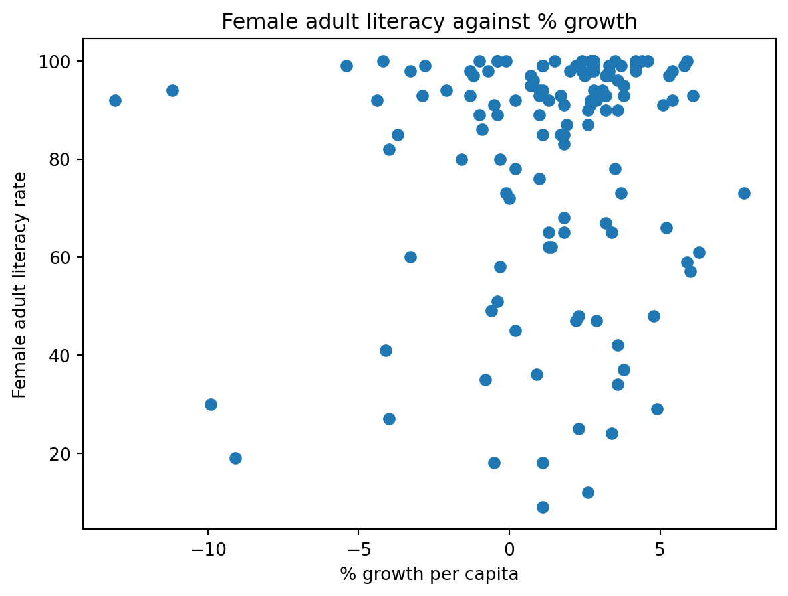
In Seaborn, we call the function sns.scatterplot. We use the x and y parameters to indicate the values to be plotted along the x and y axes, respectively. By using the hue parameter, we can specify a third variable to be used for coloring each scatter point.
sns.scatterplot(data = wb, x ="per capita: % growth: 2016", \ y ="Adult literacy rate: Female: % ages 15 and older: 2005-14", hue ="Continent")plt.title("Female adult literacy against % growth");
Although the plots above communicate the general relationship between the two plotted variables, they both suffer a major limitation – overplotting. Overplotting occurs when scatter points with similar values are stacked on top of one another, making it difficult to see the number of scatter points actually plotted in the visualization. Notice how in the upper righthand region of the plots, we cannot easily tell just how many points have been plotted. This make our visualizations difficult to interpret.
We have a few methods to help reduce overplotting:
Decreasing the size of the scatter point markers can improve readability. We do this by setting a new value to the size parameter, s, of plt.scatter or sns.scatterplot
Jittering is the process of adding a small amount of random noise to all x and y values to slightly shift the position of each datapoint. By randomly shifting all the data by some small distance, we can discern individual points more clearly without modifying the major trends of the original dataset.
In the cell below, we first jitter the data using np.random.uniform, then re-plot it with smaller markers. The resulting plot is much easier to interpret.
# Setting a seed ensures that we produce the same plot each time# This means that the course notes will not change each time you access themnp.random.seed(150)# This call to np.random.uniform generates random numbers between -1 and 1# We add these random numbers to the original x data to jitter it slightlyx_noise = np.random.uniform(-1, 1, len(wb))jittered_x = wb["per capita: % growth: 2016"] + x_noise# Repeat for y datay_noise = np.random.uniform(-5, 5, len(wb))jittered_y = wb["Adult literacy rate: Female: % ages 15 and older: 2005-14"] + y_noise# Setting the size parameter `s` changes the size of each pointplt.scatter(jittered_x, jittered_y, s=15)plt.xlabel("% growth per capita (jittered)")plt.ylabel("Female adult literacy rate (jittered)")plt.title("Female adult literacy against % growth");
7.4.0.2lmplot and jointplot
Seaborn also includes several built-in functions for creating more sophisticated scatter plots. Two of the most commonly-used examples are sns.lmplot and sns.jointplot.
sns.lmplot plots both a scatter plot and a linear regression line, all in one function call. We’ll discuss linear regression in a few lectures.
sns.lmplot(data = wb, x ="per capita: % growth: 2016", \ y ="Adult literacy rate: Female: % ages 15 and older: 2005-14")plt.title("Female adult literacy against % growth");
sns.jointplot creates a visualization with three components: a scatter plot, a histogram of the distribution of x values, and a histogram of the distribution of y values.
sns.jointplot(data = wb, x ="per capita: % growth: 2016", \ y ="Adult literacy rate: Female: % ages 15 and older: 2005-14")# plt.suptitle allows us to shift the title up so it does not overlap with the histogramplt.suptitle("Female adult literacy against % growth")plt.subplots_adjust(top=0.9);
7.4.0.3 Hex plots
For datasets with a very large number of datapoints, jittering is unlikely to fully resolve the issue of overplotting. In these cases, we can attempt to visualize our data by its density, rather than displaying each individual datapoint.
Hex plots can be thought of as a two dimensional histograms that shows the joint distribution between two variables. This is particularly useful working with very dense data. In a hex plot, the x-y plane is binned into hexagons. Hexagons that are darker in color indicate a greater density of data – that is, there are more datapoints that lie in the region enclosed by the hexagon.
We can generate a hex plot using sns.jointplot modified with the kind parameter.
sns.jointplot(data = wb, x ="per capita: % growth: 2016", \ y ="Adult literacy rate: Female: % ages 15 and older: 2005-14", \ kind ="hex")# plt.suptitle allows us to shift the title up so it does not overlap with the histogramplt.suptitle("Female adult literacy against % growth")plt.subplots_adjust(top=0.9);
7.4.0.4 Contour Plots
Contour plots are an alternative way of plotting the joint distribution of two variables. You can think of them as the 2-dimensional versions of KDE plots. A contour plot can be interpreted in a similar way to a topographic map. Each countour line represents an area that has the same density of datapoints throughout the region. Contours marked with darker colors contain more datapoints (a higher density) in that region.
sns.kdeplot will generate a contour plot if we specify both x and y data.
sns.kdeplot(data = wb, x ="per capita: % growth: 2016", \ y ="Adult literacy rate: Female: % ages 15 and older: 2005-14", \ fill =True)plt.title("Female adult literacy against % growth");
7.5 Transformations
This lecture has covered visualizations in great depth. We looked at various forms of visualizations, plotting libraries, and high-level theory.
Much of this was done to uncover insights in data, which will prove necessary when we begin building models of data later in the course. A strong graphical correlation between two variables hints at an underlying relationship that we may want to study in greater detail. However, relying on visual relationships alone is limiting - not all plots show association. The presence of outliers and other statistical anomalies make it hard to interpret data.
Transformations are the process of manipulating data to find significant relationships between variables. These are often found by applying mathematical functions to variables that “transform” their range of possible values and highlight some previously hidden associations between data.
To see why we may want to transform data, consider the following plot of adult literacy rates against gross national income.
Code
# Some data cleaning to help with the next exampledf = pd.DataFrame(index=wb.index)df['lit'] = wb['Adult literacy rate: Female: % ages 15 and older: 2005-14'] \+ wb["Adult literacy rate: Male: % ages 15 and older: 2005-14"]df['inc'] = wb['Gross national income per capita, Atlas method: $: 2016']df.dropna(inplace=True)plt.scatter(df["inc"], df["lit"])plt.xlabel("Gross national income per capita")plt.ylabel("Adult literacy rate")plt.title("Adult literacy rate against GNI per capita");
This plot is difficult to interpret for two reasons:
The data shown in the visualization appears almost “smushed” – it is heavily concentrated in the upper lefthand region of the plot. Even if we jittered the dataset, we likely would not be able to fully assess all datapoints in that area.
It is hard to generalize a clear relationship between the two plotted variables. While adult literacy rate appears to share some positive relationship with gross national income, we are not able to describe the specifics in this trend in much detail.
A transformation would allow us to visualize this data more clearly, which, in turn, would enable us to describe the underlying relationship between our variables of interest.
We will most commonly apply a transformation to linearize a relationship between variables. If we find a transformation to make a scatter plot of two variables linear, we can “backtrack” to find the exact relationship between the variables. This helps us in two major ways. Firstly, linear relationships are particularly simple to interpret – we have an intutive sense of what the slope and intercept of a linear trend represent, and how they can help us understand the relationship between two variables. Secondly, linear relationships are the backbone of linear models. We will begine exploring linear modeling in great detail next week. As we’ll soon see, linear models become much more effective when we are working with linearized data.
In the remainder of this note, we will discuss how to linearize a dataset to produce the result below. Notice that the resulting plot displays a rough linear relationship between the values plotted on the x and y axes.
7.5.1 Applying Transformations
To linearize a relationship, begin by asking yourself: what makes the data non-linear? It is helpful to repeat this question for each variable in your visualization.
Let’s start by considering the gross national income variable in our plot above. Looking at just the x values in the scatter plot, we notice that most datapoints are clustered at low values to the left of the plot. The scale of the x axis is being distorted by the few outlying datapoints at extremely large values on the right.
If we decreased the size of these outliers relative to the bulk of the data, we could reduce the distortion of the horizontal axis. How can we do this? We need a transformation that will:
Decrease the magnitude of large x values by a signficant amount
Not drastically change the magnitude of small x values
One function that produces this result is the log transformation. When we take the logarithm of a large number, the original number will decrease in magnitude dramatically. Conversely, when we take the logarithm of a small number, the original number does not change its value by as significant of an amount (to illustrate this, consider the difference between \(\log{(100)} = 4.61\) and \(\log{(10)} = 2.3\)).
In Data 100 (and most upper division STEM classes), \(\log\) is used to refer to the natural logarithm with base \(e\).
# np.log takes the logarithm of an array or Seriesplt.scatter(np.log(df["inc"]), df["lit"])plt.xlabel("Log(gross national income per capita)")plt.ylabel("Adult literacy rate")plt.title("Adult literacy rate against Log(GNI per capita)");
After taking the logarithm of our x values, our plot appears much more balanced in its horizontal scale. We no longer have many datapoints clumped on one end and a few outliers out at extreme values.
Let’s repeat this reasoning for the y values. Considering only the vertical axis of the plot, notice how there are many datapoints concentrated at large y values. Only a few datapoints lie at smaller values of y.
If we were to “spread out” these large values of y more, we would no longer see the dense concentration in one region of the y axis. We need a transformation that will:
Increase the magnitude of large values of y so these datapoints are distributed more broadly on the vertical scale
Not substantially alter the scaling of small values of y (we do not want to drastically modify the lower end of the y axis, which is already distributed evenly on the vertical scale)
In this case, it is helpful to apply a power transformation – that is, raise our y values to a power. Let’s try raising our adult literacy rate values to the power of 4. Large values raised to the power of 4 will increase in magnitude proportionally much more than small values raised to the power of 4 (consider the difference between \(2^4 = 16\) and \(200^4 = 1600000000\)).
# Apply a log transformation to the x values and a power transformation to the y valuesplt.scatter(np.log(df["inc"]), df["lit"]**4)plt.xlabel("Log(gross national income per capita)")plt.ylabel("Adult literacy rate (4th power)")plt.suptitle("Adult literacy rate (4th power) against Log(GNI per capita)")plt.subplots_adjust(top=0.9);
Our scatter plot is looking a lot better! Now, we are plotting the log of our original x values on the horizontal axis, and the 4th power of our original y values on the vertical axis. We start to see an approximate linear relationship between our transformed variables.
What can we take away from this? We now know that the log of gross national income and adult literacy to the power of 4 are roughly linearly related. If we denote the original, untransformed gross national income values as \(x\) and the original adult literacy rate values as \(y\), we can use the standard form of a linear fit to express this relationship:
\[y^4 = m(\log{x}) + b\]
Where \(m\) represents the slope of the linear fit, while \(b\) represents the intercept.
The cell below computes \(m\) and \(b\) for our transformed data. We’ll discuss how this code was generated in a future lecture.
Code
# The code below fits a linear regression model. We'll discuss it at length in a future lecturefrom sklearn.linear_model import LinearRegressionmodel = LinearRegression()model.fit(np.log(df[["inc"]]), df["lit"]**4)m, b = model.coef_[0], model.intercept_print(f"The slope, m, of the transformed data is: {m}")print(f"The intercept, b, of the transformed data is: {b}")df = df.sort_values("inc")plt.scatter(np.log(df["inc"]), df["lit"]**4, label="Transformed data")plt.plot(np.log(df["inc"]), m*np.log(df["inc"])+b, c="red", label="Linear regression")plt.xlabel("Log(gross national income per capita)")plt.ylabel("Adult literacy rate (4th power)")plt.legend();
The slope, m, of the transformed data is: 336400693.43172705
The intercept, b, of the transformed data is: -1802204836.0479987
What if we want to understand the underlying relationship between our original variables, before they were transformed? We can simply rearrange our linear expression above!
Recall our linear relationship between the transformed variables \(\log{x}\) and \(y^4\).
\[y^4 = m(\log{x}) + b\]
By rearranging the equation, we find a relationship between the untransformed variables \(x\) and \(y\).
\[y = [m(\log{x}) + b]^{(1/4)}\]
When we plug in the values for \(m\) and \(b\) computed above, something interesting happens.
Code
# Now, plug the values for m and b into the relationship between the untransformed x and yplt.scatter(df["inc"], df["lit"], label="Untransformed data")plt.plot(df["inc"], (m*np.log(df["inc"])+b)**(1/4), c="red", label="Modeled relationship")plt.xlabel("Gross national income per capita")plt.ylabel("Adult literacy rate")plt.legend();
We have found a relationship between our original variables – gross national income and adult literacy rate!
Transformations are powerful tools for understanding our data in greater detail. To summarize what we just achieved:
We identified appropriate transformations to linearize the original data
We used our knowledge of linear curves to compute the slope and intercept of the transformed data
We used this slope and intercept information to derive a relationship in the untransformed data
Linearization will be an important tool as we begin our work on linear modeling next week.
7.5.2 Tukey-Mosteller Bulge Diagram
The Tukey-Mosteller Bulge Diagram is a guide to possible transformations for achieving linearity. It is a visual summary of the reasoning we just worked through above.
How does it work? Each curved “bulge” represents a possible shape of non-linear data. To use the diagram, find which of the four bulges resembles your dataset the most closely. Then, look at the axes of the quadrant for this bulge. The horizontal axis will list possible transformations that could be applied to your x data for linearization. Similarly, the verical axis will list possible transformations that could be applied to your y data. Note that each axis lists two possible transformations – either of these transformations has the potential to linearize your dataset. It’s a good idea to try both out to see which one produces better results on your specific data.
Generally:
\(\sqrt{}\) and \(\log{}\) will reduce the magnitude of large values
Powers (\(^2\) and \(^3\)) will increase the spread in magnitude of large values
Important: you should still understand the logic we worked through to determine how best to transform the data. The bulge diagram is just a summary of this same reasoning. You will be expected to be able to explain why a given transformation is or is not appropriate for linearization.